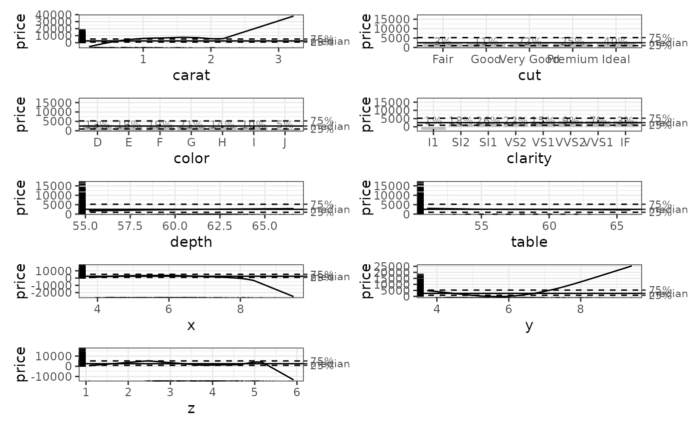
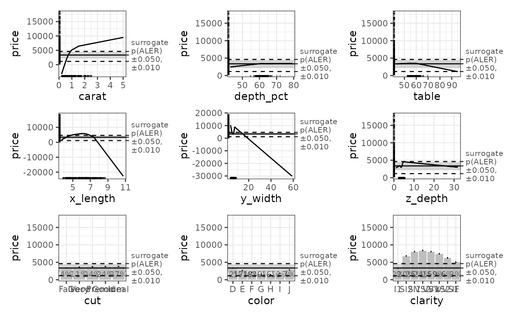
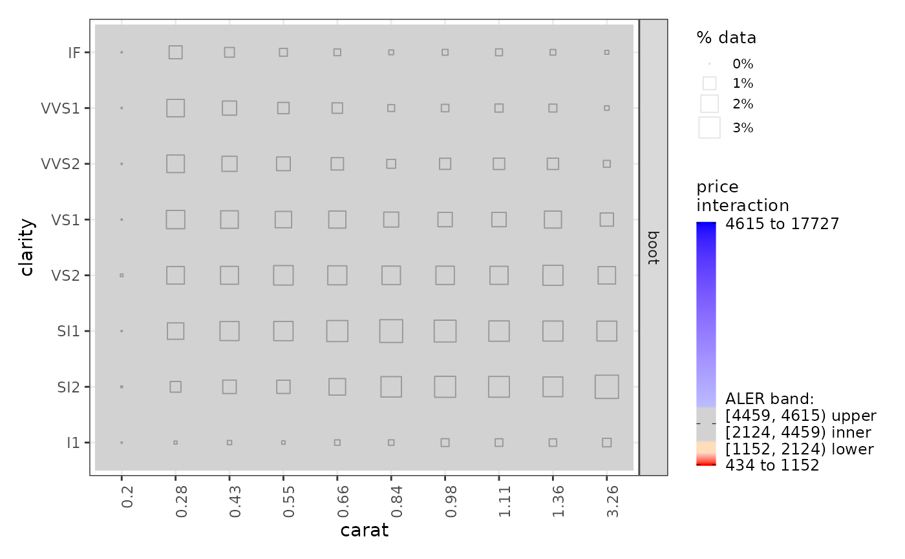

ale() is the central function that manages the creation of ALE data. For details, see the introductory vignette for this package or the details and examples below.
Usage
ale(
data,
model,
x_cols = NULL,
y_col = NULL,
...,
complete_d = 1L,
parallel = future::availableCores(logical = FALSE, omit = 1),
model_packages = NULL,
output = c("plots", "data", "stats", "conf_regions"),
pred_fun = function(object, newdata, type = pred_type) {
stats::predict(object =
object, newdata = newdata, type = type)
},
pred_type = "response",
p_values = NULL,
p_alpha = c(0.01, 0.05),
max_num_bins = 100,
boot_it = 0,
seed = 0,
boot_alpha = 0.05,
boot_centre = "mean",
y_type = NULL,
median_band_pct = c(0.05, 0.5),
sample_size = 500,
min_rug_per_interval = 1,
bins = NULL,
ns = NULL,
silent = FALSE
)Arguments
- data
dataframe. Dataset from which to create predictions for the ALE.
- model
model object. Model for which ALE should be calculated. May be any kind of R object that can make predictions from data.
- x_cols
character. Vector of column names from
datafor which one-way ALE data is to be calculated (that is, simple ALE without interactions). If not provided, ALE will be created for all columns indataexcepty_col.- y_col
character(1). Name of the outcome target label (y) variable. If not provided,
ale()will try to detect it automatically. For non-standard models,y_colshould be provided. For survival models, sety_colto the name of the binary event column; in that case,pred_typeshould also be specified.- ...
not used. Inserted to require explicit naming of subsequent arguments.
- complete_d
integer(1 or 2). If
x_colsisNULL(default),complete_d = 1L(default) will generate all 1D ALE data;complete_d = 2Lwill generate all 2D ALE data; andcomplete_d = c(1L, 2L)will generate both. Ifx_colsis anything other thanNULL,complete_dis ignored and internally set toNULL.- parallel
non-negative integer(1). Number of parallel threads (workers or tasks) for parallel execution of the function. See details.
- model_packages
character. Character vector of names of packages that
modeldepends on that might not be obvious. The{ale}package should be able to automatically recognize and load most packages that are needed, but with parallel processing enabled (which is the default), some packages might not be properly loaded. This problem might be indicated if you get a strange error message that mentions something somewhere about "progress interrupted" or "future", especially if you see such errors after the progress bars begin displaying (assuming you did not disable progress bars withsilent = TRUE). In that case, first try disabling parallel processing withparallel = 0. If that resolves the problem, then to get faster parallel processing to work, try adding the package names needed for themodelto this argument, e.g.,model_packages = c('tidymodels', 'mgcv').- output
character in c('plots', 'data', 'stats', 'conf_regions', 'boot'). Vector of types of results to return. 'plots' will return an ALE plot; 'data' will return the source ALE data; 'stats' will return ALE statistics; 'boot' will return ALE data for each bootstrap iteration. Each option must be listed to return the specified component. By default, all are returned except for 'boot'.
- pred_fun, pred_type
function,character(1).
pred_funis a function that returns a vector of predicted values of typepred_typefrommodelondata. See details.- p_values
instructions for calculating p-values and to determine the median band. If
NULL(default), no p-values are calculated andmedian_band_pctis used to determine the median band. To calculate p-values, an object generated by thecreate_p_dist()function must be provided here. Ifp_valuesis set to 'auto', thisale()function will try to automatically create the p-values distribution; this only works with standard R model types. An error message will be given if p-values cannot be generated. Any other input provided to this argument will result in an error. For more details about creating p-values, see documentation forcreate_p_dist(). Note that p-values will not be generated if 'stats' are not included as an option in theoutputargument.- p_alpha
numeric length 2 from 0 to 1. Alpha for "confidence interval" ranges for printing bands around the median for single-variable plots. These are the default values used if
p_valuesare provided. Ifp_valuesare not provided, thenmedian_band_pctis used instead. The inner band range will be the median value of y ±p_alpha[2]of the relevant ALE statistic (usually ALE range or normalized ALE range). For plots with a second outer band, its range will be the median ±p_alpha[1]. For example, in the ALE plots, for the defaultp_alpha = c(0.01, 0.05), the inner band will be the median ± ALE minimum or maximum at p = 0.05 and the outer band will be the median ± ALE minimum or maximum at p = 0.01.- max_num_bins
positive integer length 1. Maximum number of bins for numeric
x_colsvariables. The number of bins that the algorithm generates might eventually be fewer than what the user specifies if the data values for a given x value do not support that many bins.- boot_it
non-negative integer length 1. Number of bootstrap iterations for the ALE values. If
boot_it = 0(default), then ALE will be calculated on the entire dataset with no bootstrapping.- seed
integer length 1. Random seed. Supply this between runs to assure that identical random ALE data is generated each time
- boot_alpha
numeric length 1 from 0 to 1. Alpha for percentile-based confidence interval range for the bootstrap intervals; the bootstrap confidence intervals will be the lowest and highest
(1 - 0.05) / 2percentiles. For example, ifboot_alpha = 0.05(default), the intervals will be from the 2.5 and 97.5 percentiles.- boot_centre
character length 1 in c('mean', 'median'). When bootstrapping, the main estimate for the ALE y value is considered to be
boot_centre. Regardless of the value specified here, both the mean and median will be available.- y_type
character length 1. Datatype of the y (outcome) variable. Must be one of c('binary', 'numeric', 'categorical', 'ordinal'). Normally determined automatically; only provide for complex non-standard models that require it.
- median_band_pct
numeric length 2 from 0 to 1. Alpha for "confidence interval" ranges for printing bands around the median for single-variable plots. These are the default values used if
p_valuesare not provided. Ifp_valuesare provided, thenmedian_band_pctis ignored. The inner band range will be the median value of y ±median_band_pct[1]/2. For plots with a second outer band, its range will be the median ±median_band_pct[2]/2. For example, for the defaultmedian_band_pct = c(0.05, 0.5), the inner band will be the median ± 2.5% and the outer band will be the median ± 25%.- sample_size
non-negative integer(1). Size of the sample of
datato be returned with thealeobject. This is primarily used for rug plots. See themin_rug_per_intervalargument.- min_rug_per_interval
non-negative integer(1). Rug plots are down-sampled to
sample_sizerows otherwise they are too slow. They maintain representativeness of the data by guaranteeing that each of themax_num_binsintervals will retain at leastmin_rug_per_intervalelements; usually set to just 1 (default) or 2. To prevent this down-sampling, setsample_sizetoInf(but that would enlarge the size of thealeobject to include the entire dataset).- bins, ns
list of bin and n count vectors. If provided, these vectors will be used to set the intervals of the ALE x axis for each variable. By default (NULL), the function automatically calculates the bins.
binsis normally used in advanced analyses where the bins from a previous analysis are reused for subsequent analyses (for example, for full model bootstrapping; see themodel_bootstrap()function).- silent
logical length 1, default
FALSE.IfTRUE, do not display any non-essential messages during execution (such as progress bars). Regardless, any warnings and errors will always display. See details for how to enable progress bars.
Value
list with the following elements:
data: a list whose elements, named by each requested x variable, are each a tibble with the following columns:.binor.ceil: For non-numeric x,.binis the value of each of the ALE categories. For numeric x,.ceilis the value of the upper bound of each ALE bin. The first "bin" of numeric variables represents the minimum value..n: the number of rows of data in each bin represented by.binor.ceil. For numeric x, the first bin contains all data elements that have exactly the minimum value of x. This is often 1, but might be more than 1 if more than one data element has exactly the minimum value..y: the ALE function value calculated for that bin. For bootstrapped ALE, this is the same as.y_meanby default or.y_medianif theboot_centre = 'median'argument is specified. Regardless, both.y_meanand.y_medianare returned as columns here..y_lo,.y_hi: the lower and upper confidence intervals, respectively, for the bootstrapped.yvalue. Note: regardless what options are requested in theoutputargument, thisdataelement is always returned.
boot_data: ifbootis requested in theoutputargument, returns a list whose elements, named by each requested x variable, are each a matrix. If not requested (as is the default) or ifboot_it == 0, returnsNULL. Each matrix element is the.yvalue of each bin (.binor.ceil) (unnamed rows) for eachboot_itbootstrap iteration (unnamed columns).stats: ifstatsare requested in theoutputargument (as is the default), returns a list. If not requested, returnsNULL. The returned list provides ALE statistics of thedataelement duplicated and presented from various perspectives in the following elements:by_term: a list named by each requested x variable, each of whose elements is a tibble with the following columns:statistic: the ALE statistic specified in the row (see theby_statelement below).estimate: the bootstrappedmeanormedianof thestatistic, depending on theboot_centreargument to theale()function. Regardless, bothmeanandmedianare returned as columns here.conf.low,conf.high: the lower and upper confidence intervals, respectively, for the bootstrappedestimate.
by_stat: list named by each of the following ALE statistics:aled,aler_min,aler_max,naled,naler_min,naler_max. Seevignette('ale-statistics')for details.estimate: a tibble whose data consists of theestimatevalues from theby_termelement above. The columns areterm(the variable name) and the statistic for which the estimate is given:aled,aler_min,aler_max,naled,naler_min,naler_max.effects_plot: aggplotobject which is the ALE effects plot for all the x variables.conf_regions: ifconf_regionsare requested in theoutputargument (as is the default), returns a list. If not requested, returnsNULL. The returned list provides summaries of the confidence regions of the relevant ALE statistics of thedataelement. The list has the following elements:by_term: a list named by each requested x variable, each of whose elements is a tibble with the relevant data for the confidence regions. (Seevignette('ale-statistics')for details about confidence regions.)significant: a tibble that summarizes theby_termto only show confidence regions that are statistically significant. Its columns are those fromby_termplus atermcolumn to specify which x variable is indicated by the respective row.sig_criterion: a length-one character vector that reports which values were used to determine statistical significance: ifp_valueswas provided to theale()function, it will be used; otherwise,median_band_pctwill be used.
plots: ifplotsare requested in theoutputargument (as is the default), returns a list whose elements, named by each requested x variable, are each aggplotobject of the ALE y values plotted against the x variable intervals. Ifplotsis not included inoutput, this element isNULL.Various values echoed from the original call to the
ale()function, provided to document the key elements used to calculate the ALE data, statistics, and plots:y_col,x_cols,boot_it,seed,boot_alpha,boot_centre,y_type,median_band_pct,sample_size. These are either the values provided by the user or used by default if the user did not change them.y_summary: summary statistics of y values used for the ALE calculation. These statistics are based on the actual values ofy_colunless ify_typeis a probability or other value that is constrained in the[0, 1]range. In that case,y_summaryis based on the predicted values ofy_colby applyingmodelto thedata.y_summaryis a named numeric vector. Most of the elements are the percentile of the y values. E.g., the '5%' element is the 5th percentile of y values. The following elements have special meanings:The first element is named either
porqand its value is always 0. The value is not used; only the name of the element is meaningful.pmeans that the following specialy_summaryelements are based on the providedale_pobject.qmeans that quantiles were calculated based onmedian_band_pctbecausep_valueswas not provided.min,mean,max: the minimum, mean, and maximum y values, respectively. Note that the median is50%, the 50th percentile.med_lo_2,med_lo,med_hi,med_hi_2:med_loandmed_hiare the inner lower and upper confidence intervals of y values with respect to the median (50%);med_lo_2andmed_hi_2are the outer confidence intervals. See the documentation for thep_alphaandmedian_band_pctarguments to understand how these are determined.
Custom predict function
The calculation of ALE requires modifying several values of the original data. Thus, ale() needs direct access to a predict function that work on model. By default, ale() uses a generic default predict function of the form predict(object, newdata, type) with the default prediction type of 'response'. If, however, the desired prediction values are not generated with that format, the user must specify what they want. Most of the time, the only modification needed is to change the prediction type to some other value by setting the pred_type argument (e.g., to 'prob' to generated classification probabilities). But if the desired predictions need a different function signature, then the user must create a custom prediction function and pass it to pred_fun. The requirements for this custom function are:
It must take three required arguments and nothing else:
object: a modelnewdata: a dataframe or compatible table typetype: a string; it should usually be specified astype = pred_typeThese argument names are according to the R convention for the genericstats::predict()function.
It must return a vector of numeric values as the prediction.
You can see an example below of a custom prediction function.
Note: survival models probably do not need a custom prediction function but y_col must be set to the name of the binary event column and pred_type must be set to the desired prediction type.
ALE statistics
For details about the ALE-based statistics (ALED, ALER, NALED, and NALER), see vignette('ale-statistics').
Parallel processing
Parallel processing using the {furrr} framework is enabled by default. By default, it will use all the available physical CPU cores (minus the core being used for the current R session) with the setting parallel = future::availableCores(logical = FALSE, omit = 1). Note that only physical cores are used (not logical cores or "hyperthreading") because machine learning can only take advantage of the floating point processors on physical cores, which are absent from logical cores. Trying to use logical cores will not speed up processing and might actually slow it down with useless data transfer. If you will dedicate the entire computer to running this function (and you don't mind everything else becoming very slow while it runs), you may use all cores by setting parallel = future::availableCores(logical = FALSE). To disable parallel processing, set parallel = 0.
Progress bars
Progress bars are implemented with the {progressr} package, which lets the user fully control progress bars. To disable progress bars, set silent = TRUE. The first time a function is called in the {ale} package that requires progress bars, it checks if the user has activated the necessary {progressr} settings. If not, the {ale} package automatically enables {progressr} progress bars with the cli handler and prints a message notifying the user.
If you like the default progress bars and you want to make them permanent, then you can add the following lines of code to your .Rprofile configuration file and they will become your defaults for every R session; you will not see the message again:
For more details on formatting progress bars to your liking, see the introduction to the {progressr} package.
References
Okoli, Chitu. 2023. “Statistical Inference Using Machine Learning and Classical Techniques Based on Accumulated Local Effects (ALE).” arXiv. https://arxiv.org/abs/2310.09877.
Examples
set.seed(0)
diamonds_sample <- ggplot2::diamonds[sample(nrow(ggplot2::diamonds), 1000), ]
# Create a GAM model with flexible curves to predict diamond price
# Smooth all numeric variables and include all other variables
gam_diamonds <- mgcv::gam(
price ~ s(carat) + s(depth) + s(table) + s(x) + s(y) + s(z) +
cut + color + clarity,
data = diamonds_sample
)
summary(gam_diamonds)
#>
#> Family: gaussian
#> Link function: identity
#>
#> Formula:
#> price ~ s(carat) + s(depth) + s(table) + s(x) + s(y) + s(z) +
#> cut + color + clarity
#>
#> Parametric coefficients:
#> Estimate Std. Error t value Pr(>|t|)
#> (Intercept) 3421.412 74.903 45.678 < 2e-16 ***
#> cut.L 261.339 171.630 1.523 0.128170
#> cut.Q 53.684 129.990 0.413 0.679710
#> cut.C -71.942 103.804 -0.693 0.488447
#> cut^4 -8.657 80.614 -0.107 0.914506
#> color.L -1778.903 113.669 -15.650 < 2e-16 ***
#> color.Q -482.225 104.675 -4.607 4.64e-06 ***
#> color.C 58.724 95.983 0.612 0.540807
#> color^4 125.640 87.111 1.442 0.149548
#> color^5 -241.194 81.913 -2.945 0.003314 **
#> color^6 -49.305 74.435 -0.662 0.507883
#> clarity.L 4141.841 226.713 18.269 < 2e-16 ***
#> clarity.Q -2367.820 217.185 -10.902 < 2e-16 ***
#> clarity.C 1026.214 180.295 5.692 1.67e-08 ***
#> clarity^4 -602.066 137.258 -4.386 1.28e-05 ***
#> clarity^5 408.336 105.344 3.876 0.000113 ***
#> clarity^6 -82.379 88.434 -0.932 0.351815
#> clarity^7 4.017 78.816 0.051 0.959362
#> ---
#> Signif. codes: 0 ‘***’ 0.001 ‘**’ 0.01 ‘*’ 0.05 ‘.’ 0.1 ‘ ’ 1
#>
#> Approximate significance of smooth terms:
#> edf Ref.df F p-value
#> s(carat) 7.503 8.536 4.114 3.65e-05 ***
#> s(depth) 1.486 1.874 0.601 0.614753
#> s(table) 2.929 3.738 1.294 0.240011
#> s(x) 8.897 8.967 3.323 0.000542 ***
#> s(y) 3.875 5.118 11.075 < 2e-16 ***
#> s(z) 9.000 9.000 2.648 0.004938 **
#> ---
#> Signif. codes: 0 ‘***’ 0.001 ‘**’ 0.01 ‘*’ 0.05 ‘.’ 0.1 ‘ ’ 1
#>
#> R-sq.(adj) = 0.94 Deviance explained = 94.3%
#> GCV = 9.7669e+05 Scale est. = 9.262e+05 n = 1000
# \donttest{
# Simple ALE without bootstrapping
ale_gam_diamonds <- ale(diamonds_sample, gam_diamonds)
# Plot the ALE data
diamonds_plots <- plot(ale_gam_diamonds)
diamonds_1D_plots <- diamonds_plots$distinct$price$plots[[1]]
patchwork::wrap_plots(diamonds_1D_plots, ncol = 2)

# Bootstrapped ALE
# This can be slow, since bootstrapping runs the algorithm boot_it times
# Create ALE with 100 bootstrap samples
ale_gam_diamonds_boot <- ale(
diamonds_sample, gam_diamonds,
boot_it = 100
)
# Bootstrapped ALEs print with confidence intervals
diamonds_boot_plots <- plot(ale_gam_diamonds_boot)
diamonds_boot_1D_plots <- diamonds_boot_plots$distinct$price$plots[[1]]
patchwork::wrap_plots(diamonds_boot_1D_plots, ncol = 2)

# If the predict function you want is non-standard, you may define a
# custom predict function. It must return a single numeric vector.
custom_predict <- function(object, newdata, type = pred_type) {
predict(object, newdata, type = type, se.fit = TRUE)$fit
}
ale_gam_diamonds_custom <- ale(
diamonds_sample, gam_diamonds,
pred_fun = custom_predict, pred_type = 'link'
)
# Plot the ALE data
diamonds_custom_plots <- plot(ale_gam_diamonds_custom)
diamonds_custom_1D_plots <- diamonds_custom_plots$distinct$price$plots[[1]]
patchwork::wrap_plots(diamonds_custom_1D_plots, ncol = 2)

# }